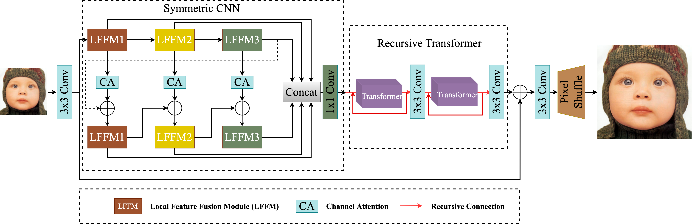
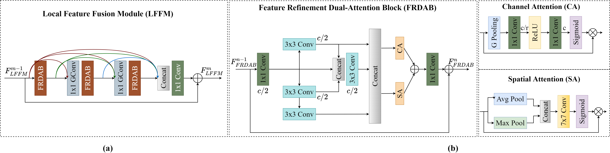

31st International Joint Conference on Artificial Intelligence (IJCAI) 2022
Abstract
Single-image super-resolution (SISR) has achieved significant breakthroughs with the development of deep learning.
However, these methods are difficult to be applied in real-world scenarios since they are inevitably accompanied by the problems of computational and memory costs caused by the complex operations.
To solve this issue, we propose a Lightweight Bimodal Network (LBNet) for SISR. Specifically, an effective Symmetric CNN is designed for local feature extraction and coarse image reconstruction.
Meanwhile, we propose a Recursive Transformer to fully learn the long-term dependence of images thus the global information can be fully used to further refine texture details.
Studies show that the hybrid of CNN and Transformer can build a more efficient model. Extensive experiments have proved that our LBNet achieves more prominent performance than other state-of-the-art methods with a relatively low computational cost and memory consumption.
The code is available at https://github.com/IVIPLab/LBNet.
LBNet
|  |
| The complete architecture of the proposed Lightweight Bimodal Network (LBNet). |
|  |
| The architecture of the proposed Local Feature Fusion Module (LFFM) and Feature Refinement Dual-Attention Block (FRDAB). |
PSNR/SSIM Results
Visual Results
Downloads
BibTex
@InProceedings{gao2022lightweight,
title = {Lightweight Bimodal Network for Single-Image Super-Resolution via Symmetric CNN and Recursive Transformer},
author = {Gao, Guangwei and Wang, Zheengxue and Li, Juncheng and Li, Wenjie and Yu, Yi and Zeng, Tieyong},
booktitle = {IJCAI},
year = {2022}
}